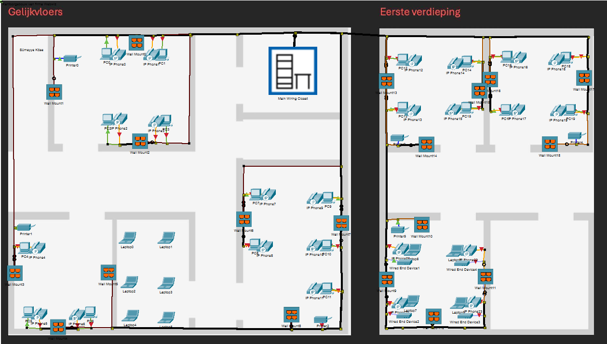

In dit project ontwierpen we een gestructureerd netwerk voor het fictieve bedrijf "Webwiz". Het oorspronkelijke netwerkontwerp was onoverzichtelijk en inefficiënt, wat leidde tot problemen zoals slechte Wi-Fi-dekking, kabelchaos en moeilijk beheersbare apparaten. Ons doel was om een toekomstbestendig netwerkplan te maken dat alle vereisten dekt en praktisch uitvoerbaar is.
Het netwerkplan omvatte:
- Het plaatsen van alle netwerkapparatuur in racks, veilig opgeborgen in een afgesloten ruimte.
- Gebruik van wand- en vloeraansluitingen met patch panels om kabelbeheer te verbeteren.
- Ontwerpen van een duidelijke structuur voor de verbindingen tussen apparaten, met aandacht voor de afstandsbeperkingen en benodigde apparatuur.
- Oplossingen voor veelvoorkomende problemen, zoals slechte Wi-Fi-dekking en een rommelig kabelbeheer.
We werkten in teams om een aankooplijst, bekabelingsplan, rack-layout en patchplan op te stellen. Dit project liet ons zien hoe belangrijk een goed ontworpen netwerk is voor een betrouwbare en efficiënte werkomgeving
|  |
|
Hier ziet u het bekabelingsplan dat ik heb gemaakt met behulp van Cisco Packet Tracer. |
Daarnaast hebben mijn groepspartner en ik ook gewerkt aan een rack-layout, patch-plan en aankooplijst, waar u hieronder een stuk van kunt zien.
De rack-layout toont de indeling van de apparatuur in het rack, inclusief de plaatsing van switches, routers, patch panels en servers. Dit zorgt voor een overzichtelijke en toegankelijke opstelling, zodat alle componenten gemakkelijk te onderhouden en te upgraden zijn.
Het patch-plan geeft een gedetailleerd overzicht van hoe de kabels tussen de patch panels, switches en werkplekken zijn aangesloten. Dit helpt bij het traceren van verbindingen en het oplossen van eventuele netwerkproblemen.
De aankooplijst bevat alle benodigde materialen zoals kabels, patchkabels, switches, racks, kabelmanagementsystemen en connectoren, met een overzicht van de kosten per item. Deze lijst helpt bij het plannen van de benodigdheden en het beheer van het budget. Samen vormen deze documenten een compleet netwerkontwerp, dat niet alleen de technische specificaties dekt, maar ook praktische aspecten van de installatie en het beheer van het netwerk.